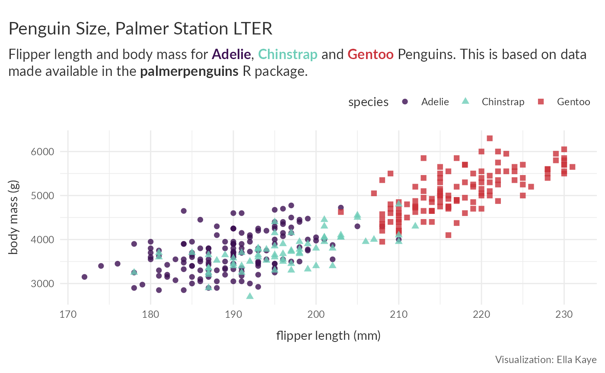

library(warwickplots)
#> Loading required package: palettes
library(ggplot2)
library(palmerpenguins)
library(dplyr)
#>
#> Attaching package: 'dplyr'
#> The following objects are masked from 'package:stats':
#>
#> filter, lag
#> The following objects are masked from 'package:base':
#>
#> intersect, setdiff, setequal, unionBelow are several example plots, made with ggplot2 demonstrating the usage
of the various palettes in warwick_palettes and
theme_warwick().
First, let’s define a starting plot:
p <- ggplot(penguins, aes(flipper_length_mm, body_mass_g, group = species)) +
geom_point(aes(colour = species, shape = species), alpha = 0.8, size = 2) +
labs(title = "Penguin Size, Palmer Station LTER",
caption = "Visualization: Ella Kaye",
x = "flipper length (mm)",
y = "body mass (g)") +
theme_warwick()
p
Using colour and fill scales
Discrete
Use scale_colour_palette_d() and
scale_fill_palette_d() for discrete scales.
p +
scale_colour_palette_d(warwick_palettes$primary) 
p +
scale_colour_palette_d(warwick_palettes$primary[c(1, 3, 5)]) 
mpg_p <- mpg |>
filter(class != "2seater") |>
ggplot(aes(y = fl, fill = class)) +
geom_bar() +
scale_fill_palette_d(warwick_palettes$primary) +
theme_warwick()
mpg_p
Sequential
ggplot(diamonds[sample(nrow(diamonds), 1000), ], aes(carat, price)) +
geom_point(aes(colour = clarity)) +
scale_colour_palette_d(warwick_palettes$aubergine)Use scale_colour_palette_c() and
scale_fill_palette_c() for continuous scales and
scale_colour_palette_b() and
scale_fill_palette_b() for binned scales.
eruptions <- ggplot(faithfuld, aes(waiting, eruptions, fill = density)) +
geom_tile()
eruptions + scale_fill_palette_c(warwick_palettes$ruby)
eruptions + scale_fill_palette_b(warwick_palettes$teal)Divergent
To demonstrate the divergent palettes, I’ll first generate some synthetic data to plot on a map:
library(maps)
# Get US state boundaries
us_states <- map_data("state")
# Generate synthetic data
set.seed(123)
states <- unique(us_states$region)
n <- length(states)
data <- data.frame(
region = states,
value = rnorm(n, mean = .5)
)
# Merge the synthetic data with the map data
us_states <- us_states |>
left_join(data, by = "region")
# Create the plot (without colour)
map_p <- ggplot(us_states, aes(x = long, y = lat, group = group, fill = value)) +
geom_polygon(color = "white") +
labs(title = "Divergent Data by US State") +
theme_warwick()We can now add a divergent colour palette:
map_p +
scale_fill_palette_c(warwick_palettes$aubergine_ruby)
By default, the fill scale’s mid-point is the mean of the groups. If
we want it to be zero, we can use the rescaler argument in
ggplot2::continuous_scale(), which accepts a function used
to scale the input values to the range [0, 1], to scale the fill values
to have a mid-point of zero. For scaling the mid-point use
scales::rescale_mid().
map_p +
scale_fill_palette_c(warwick_palettes$aubergine_ruby,
rescaler = ~ scales::rescale_mid(.x, mid = 0))See the using palettes with ggplot2 vignette in the palettes package for more details.
More on theme_warwick()
Let’s return to some earlier examples to see how to get the most out
of theme_warwick().
theme_warwick() makes use of
ggtext::element_textbox_simple() for the plot title and
subtitle. This allows us to make use of markdown and CSS styles in the
text, and also enables text-wrapping:
new_p <- p +
labs(subtitle = "Flipper length and body mass for **<span style = 'color:#3C1053;'>Adelie</span>**, **<span style = 'color:#6DCDB8;'>Chinstrap</span>** and **<span style = 'color:#CB333B;'>Gentoo</span>** Penguins. This is based on data made available in the **palmerpenguins** R package.") +
scale_color_palette_d(warwick_palettes$primary)
new_p
We can now use theme() to make further adjustments to
the appearance of the plot. Now that we have colour for the different
species in the subtitle, we no longer need the legend. Let’s alter some
of the text. Note that because the title is set in
theme_warwick() as a
ggtext::element_textbox_simple(), you need to use that in
the subsequent call to theme, whereas for make the text bigger for the
caption, you just need the standard
ggplot2::element_text():
new_p +
theme(legend.position = "none",
plot.title = ggtext::element_textbox_simple(size = rel(1.6)),
plot.caption = element_text(colour = "#CB333B")
)Note here that the title and subtitle now have less space between
them. This is because, in theme_warwick() the spacing is
defined in the definition of plot.title and that has now
been overwritten, so we need to put it back. We can inspect the source
code by calling theme_warwick in the console (without the
parentheses), or with View(theme_warwick). We can then see
the whole definition of plot.title and put the definition
of margin back in. The colour can stay as is:
new_p +
theme(legend.position = "none",
plot.title = ggtext::element_textbox_simple( size = ggplot2::rel(1.6),
margin = ggplot2::margin(12, 0, 6, 0)),
plot.caption = element_text(colour = "#CB333B")
)